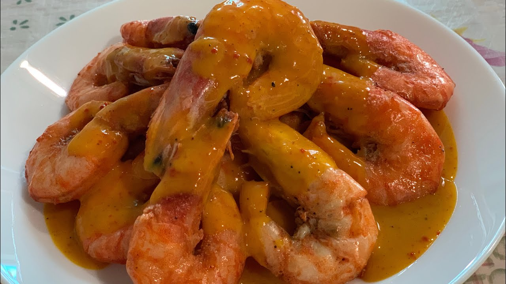
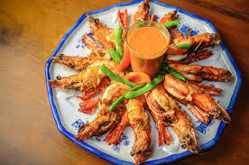

Truffle Kare-Kare Recipe
Ingredients:
- 1 kg oxtail (cut into pieces)
- 200g beef tripe (optional, cleaned and boiled)
- 2 tablespoons annatto oil
- 1 medium onion, chopped
- 4 cloves garlic, minced
- 5 cups beef broth
- 1 cup unsweetened peanut butter
- 1/2 cup ground toasted rice
- 2 tablespoons fish sauce
- 1 eggplant, sliced
- 1 bunch string beans (sitaw), trimmed
- 1 banana blossom (puso ng saging), sliced
- 2 tablespoons truffle oil
- Salt and pepper to taste
- Bagoong (fermented shrimp paste), for serving
- Steamed rice, for serving
Instructions:
- Boil the oxtail and beef tripe in a large pot until tender. Set aside.
- In another pan, heat annatto oil over medium heat. Sauté the onion and garlic until fragrant.
- Add the boiled oxtail and tripe, then pour in the beef broth. Simmer for 10 minutes.
- Stir in the peanut butter and ground toasted rice to thicken the sauce.
- Add the fish sauce, eggplant, string beans, and banana blossom. Cook until the vegetables are tender.
- Drizzle truffle oil and mix well for an enhanced aroma and flavor.
- Season with salt and pepper to taste. Serve hot with bagoong and steamed rice.
Cooking Tips:
For an extra creamy sauce, blend the peanut butter with a bit of broth before adding it to the pot.
About Kare-Kare
Kare-Kare is a rich and flavorful Filipino stew traditionally made with peanut sauce, oxtail, and vegetables. This modern version elevates the dish with the addition of truffle oil, creating a luxurious and aromatic experience.
Gallery
Check out these mouth-watering Prawns Alavar photos!



Blog
Stay tuned for articles about cooking tips, variations, and personal stories related to Kare-Kare!